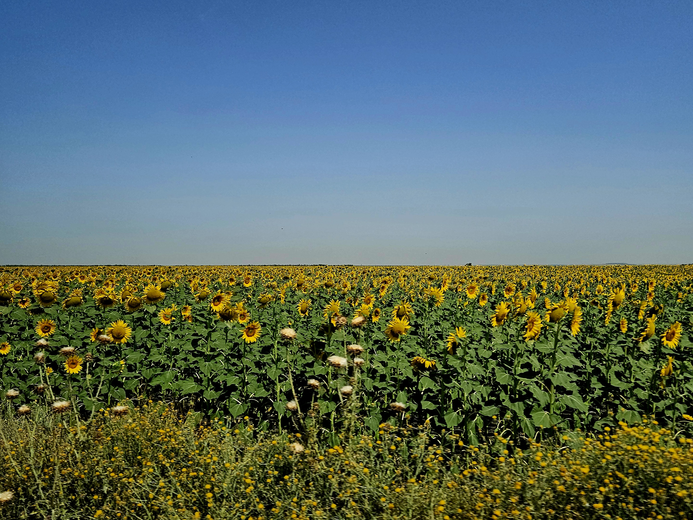

B.Sc. in Petroleum and Natural Gas Engineering
Middle East Technical University (METU) | Ankara, TürkiyeCoursework in Reservoir Engineering, Geology, Chemical Engineering, Fluid Transport, and Numerical Methods.

Coursework in Reservoir Engineering, Geology, Chemical Engineering, Fluid Transport, and Numerical Methods.
During my July 2025 internship at TP-OTC's Shorebase Logistics Center in Filyos, I worked within the Directional Drilling and Measurement department to support the Sakarya Gas Field project. I gained practical experience in bottom hole assembly (BHA) design, tested MWD/LWD directional drilling tools, and evaluated drilling fluid properties.
During my July 2024 internship at TPAO in the Trakya region, I gained hands-on experience in production engineering. Working across the process and reservoir teams, I participated in routine well maintenance, perforation jobs, surface equipment monitoring, and fluid sampling. This field exposure effectively bridged my academic coursework with real-world petroleum operations.
Researcher for the "Autonomous Discovery of Geochemical Reactions Occurring in Reservoirs During the Underground Hydrogen Storage by a Neural Network" project. Developing physics-informed neural network (PINN) architectures to accelerate PHREEQC-based 1D advective-reactive transport modeling of geochemical and microbial kinetics.
Implemented Sauty's 1D advection-dispersion model and fracture flow equations in modular Python scripts.